Farmhouse decor has stuck around for as long as it has because it's built on comfort rather than trends. It doesn't chase perfection the way some design styles do, it values warmth, texture, and a bit of lived-in imperfection over anything that looks too polished or staged for a photo.
None of the ideas below require redoing a home all at once. Most work as individual additions, layered in gradually room by room, which is really how farmhouse homes tend to come together in the first place.

Starting Small and Building Slowly
The best farmhouse spaces rarely come together all at once. Starting with one or two pieces, living with them, and adding more over time keeps a home feeling authentic rather than like it was assembled from a single shopping trip. Mixing old and new without hesitation is part of what makes the style feel genuinely personal rather than copied.
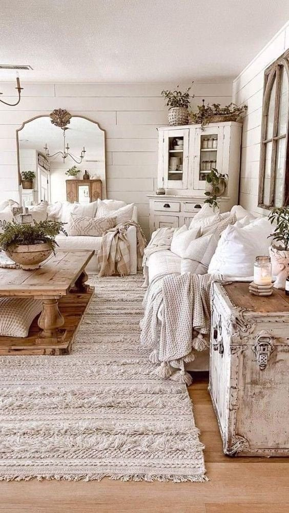
What Makes Farmhouse Decor Work
Farmhouse style blends old-house character with modern comfort, natural materials, neutral colors with real depth, and a mix of old and new pieces rather than anything perfectly matched. It adapts easily to almost any home size, from a full farmhouse down to a single styled corner of an apartment.
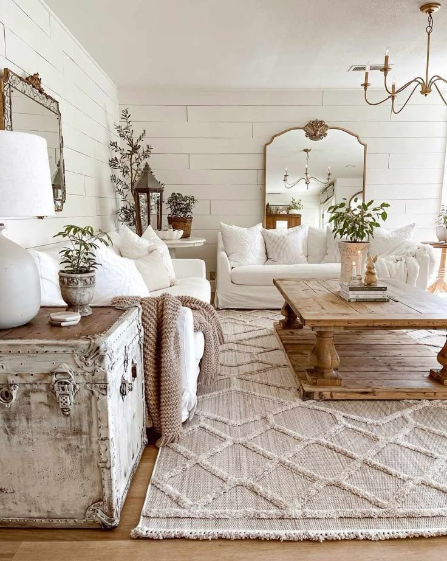
15 Farmhouse Decor Ideas
1. Final Layering Tricks That Make Everything Feel Finished
Layering is really what ties an entire farmhouse space together, adding depth and comfort without requiring much actual effort.
A useful final check before calling a room finished: does it have texture, a bit of warmth, and at least one personal touch? If all three are present, the room genuinely works.
The goal was never perfection in the first place, farmhouse decor values comfort and authenticity over anything that looks too polished or staged.
2. Cozy Farmhouse Accessories That Add Personality
Accessories are what actually bring soul into farmhouse decor, showing real personality without overwhelming the room.
Choosing pieces that genuinely feel meaningful, rather than whatever's currently trending, tends to age far better over time.
A few well-chosen objects, something inherited, something handmade, something collected on a trip, add warmth without cluttering the space.
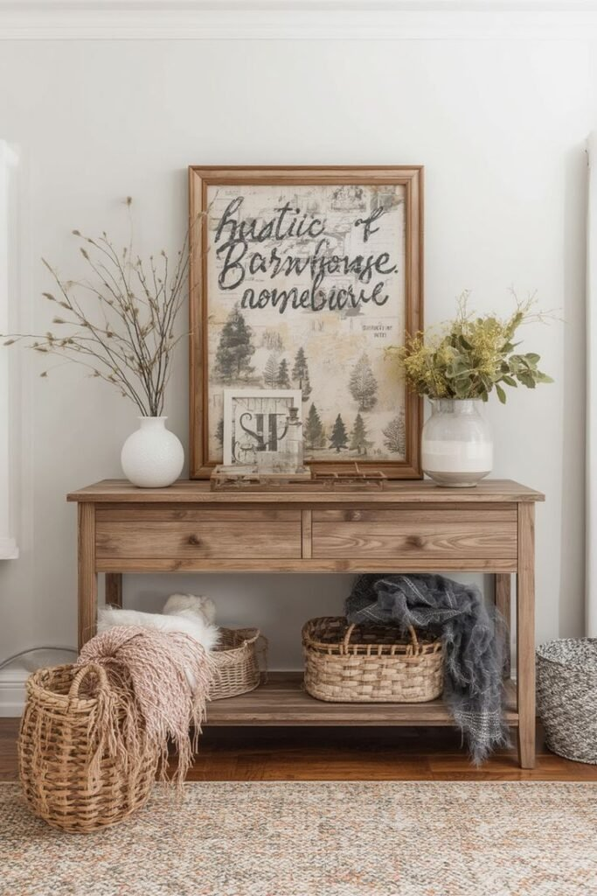
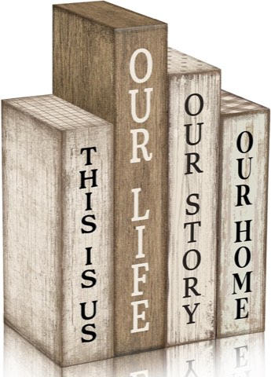
Lineshading Farmhouse Wooden Book Block Table Decor, Our Home Our Story, 4 Pcs
Shop on Amazon3. Farmhouse Dining Spaces That Invite Long Meals
A farmhouse dining space should encourage lingering rather than rushing through a meal.
Designing around comfort, rather than strict formal rules, is what gives these rooms their relaxed character.
A mismatched set of chairs around one solid farmhouse table, rather than a perfectly matched dining set, is often exactly the charm the style is going for.
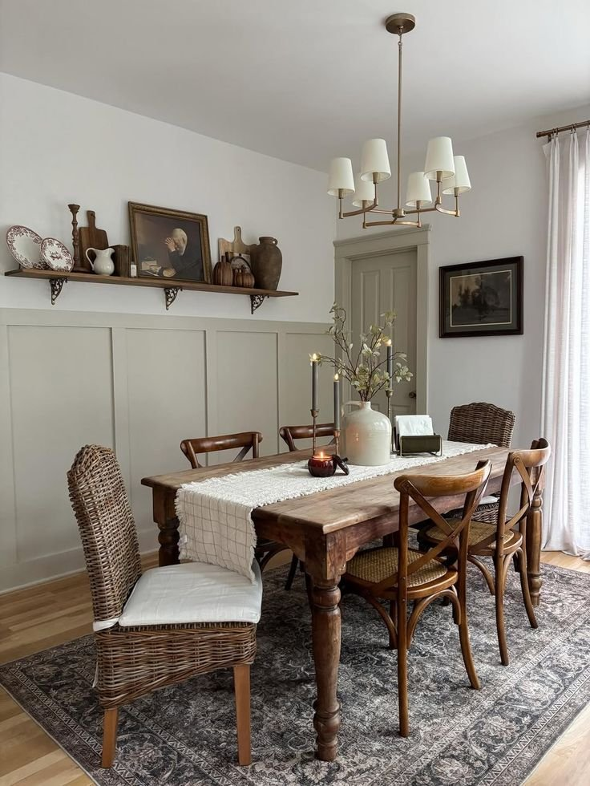
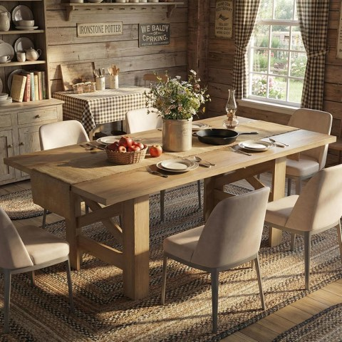
IDEALHOUSE 71 Inch Farmhouse Wooden Dining Table for 6 to 8, Barn Style
Shop on Amazon4. Mixing Metal Accents for Balance
Farmhouse spaces genuinely need some contrast, too much wood and fabric together can start to feel flat without something harder cutting through it.
Metal with an aged, slightly worn finish fits the style far better than anything too shiny or polished.
A black iron light fixture, aged brass hardware, or a vintage metal tray all ground the softness of the rest of the room and keep it from feeling overly sweet.
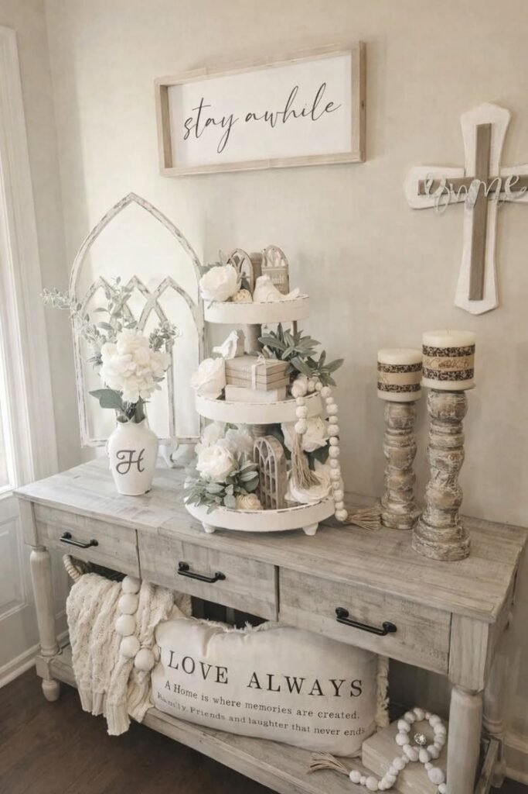
5. Entryway Farmhouse Decor That Welcomes Instantly
An entryway sets the tone for an entire home, and farmhouse style handles that first impression especially well, welcoming rather than intimidating.
A good entryway should feel like a friendly hello, not a design statement meant to impress.
Practical pieces, a bench, a row of hooks, a small tray for keys, work especially well here, since they stay useful while still looking intentional.
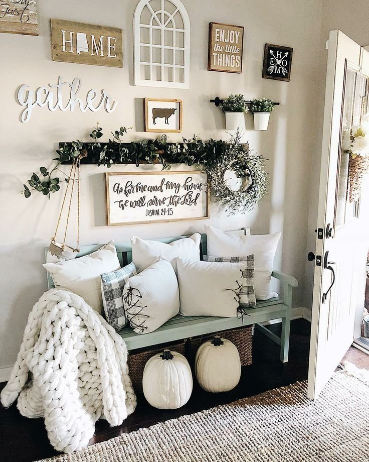
6. Farmhouse Bathroom Decor That Feels Like a Mini Spa
Bathrooms get overlooked more often than any other room, which is exactly the mistake farmhouse styling corrects.
Even a small bathroom turns genuinely spa-like once a bit of farmhouse character gets layered in, function and charm balance each other rather than competing.
Nothing about a farmhouse bathroom needs to feel overly precious, which keeps it functional for actual daily use.
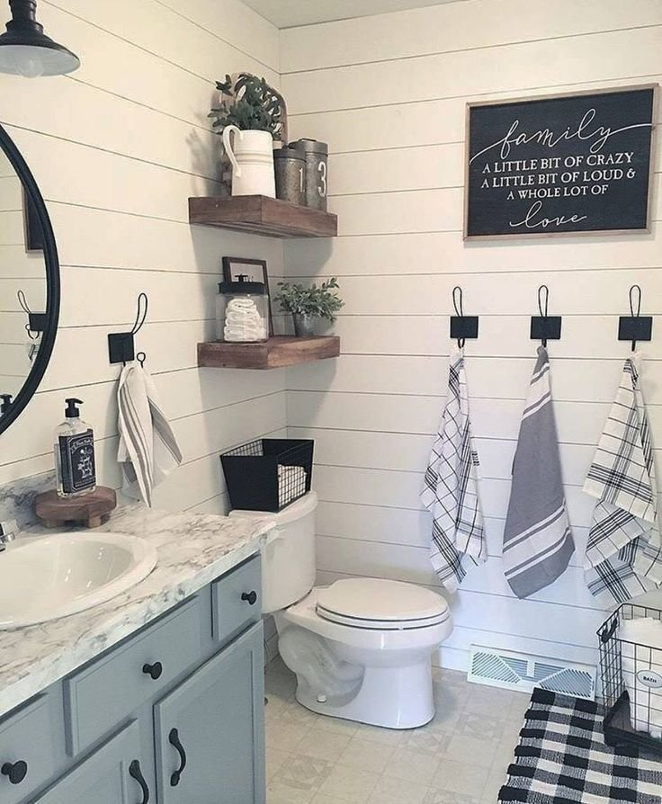
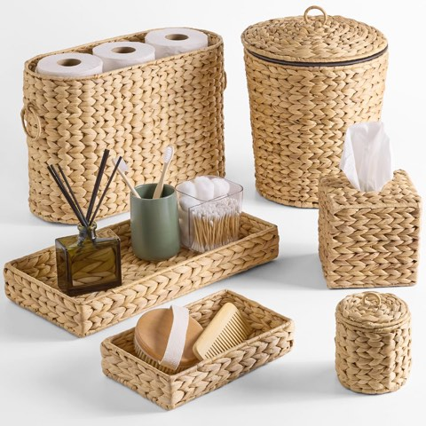
Best Choice Products 6-Piece Bathroom Accessories Set with Vanity Trays
Shop on Amazon7. Cozy Farmhouse Bedroom Styling
A bedroom should feel like a genuine retreat, not another showroom to photograph.
Farmhouse style suits bedrooms especially well, since it prioritizes softness and calm over anything too sharp or formal.
A textured throw draped across the foot of the bed is often enough on its own to make the whole room feel instantly more relaxed.
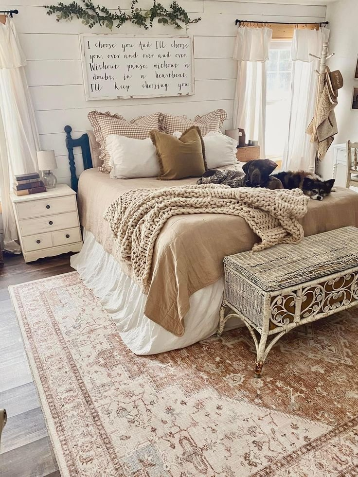
8. Farmhouse Kitchen Details That Feel Welcoming
A farmhouse kitchen should feel warm and functional, not like a showroom someone's afraid to actually cook in.
Small touches do a lot of the real work here, a wooden cutting board leaned against the backsplash, a crock of utensils, a bowl of fruit on the counter.
These details are what make a kitchen feel genuinely lived-in rather than overly staged for a photo.
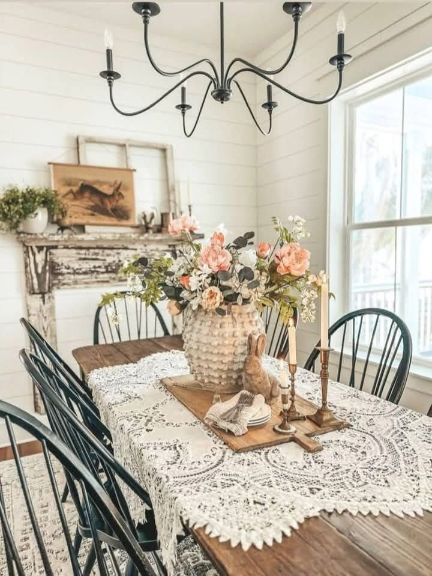
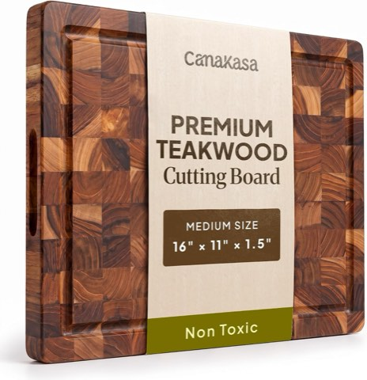
End Grain Teak Butcher Block Cutting Board, 16 x 11 Inch, 1.5 Inch Thick
Shop on Amazon9. Natural Greenery That Softens Everything
Plants bring genuine life into a farmhouse space, softening wood tones and balancing out all the neutrals so the room doesn't feel flat.
Whether the greenery is real or faux matters less than whether it looks believable from across the room.
A few low-effort additions, a potted plant on a shelf, a vase of dried stems, add real warmth without introducing any actual clutter.
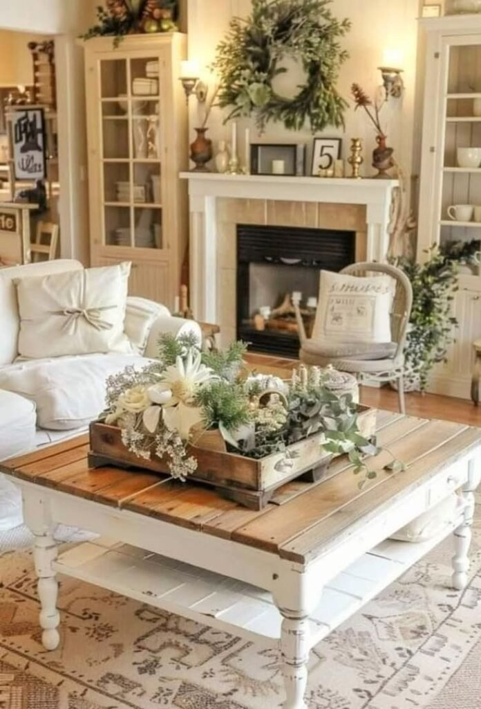
Bendable Faux Greenery Stems, 37.4 Inch, 3 Pcs, Artificial Fern Branches
Shop on Amazon10. Farmhouse Wall Decor That Feels Personal
Farmhouse-style signs exist for a reason, but a wall covered in fifteen of them misses what actually makes the style work.
Wall decor that feels collected over time, rather than purchased all at once, reads as considerably more genuine.
Farmhouse wall decor shines brightest when it actually tells a specific story rather than copying a generic template.
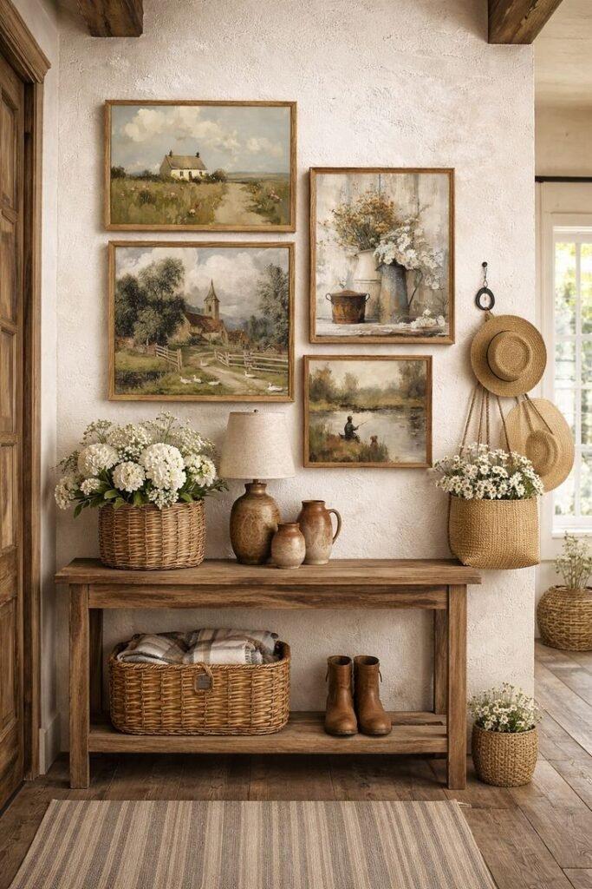
11. Cozy Farmhouse Living Room Seating
A farmhouse living room should invite people to actually sit down and stay a while, stiff seating misses the entire point of the style.
A reliable gut check: would this chair be comfortable enough to nap in? If the answer is no, it's worth reconsidering.
Mixing upholstered pieces with wood seating keeps the room visually balanced while still staying genuinely comfortable.
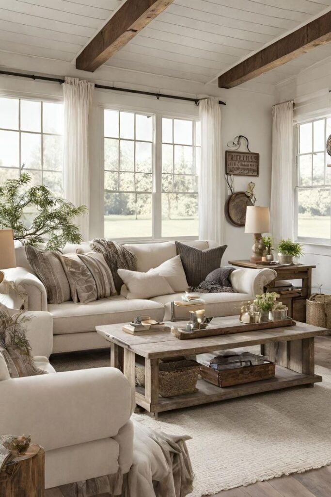

12. Vintage-Inspired Lighting That Sets the Mood
Lighting does more than illuminate a room, it sets the entire emotional tone, and farmhouse style leans specifically toward warm, soft, and welcoming.
Harsh lighting undercuts a cozy room instantly, in a way that's hard to fix with styling alone.
Fixtures that feel slightly aged but still genuinely functional work best, and warm bulbs over cool ones matter more than almost any other lighting decision in a farmhouse space.
13. Open Shelving That Feels Practical, Not Cluttered
Open shelving traces directly back to old farmhouse kitchens, where storage doubled as everyday decor, you used what you had, and you saw it daily.
Done well, open shelves feel collected and intentional; done poorly, they read as pure chaos.
A simple, repeatable pattern, a stack of items, one tall piece, one small object, across each shelf keeps the whole arrangement feeling considered rather than random.
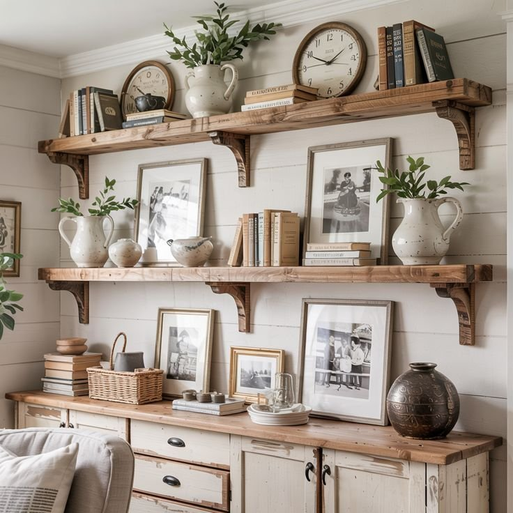

14. Reclaimed Wood Furniture With Character
Farmhouse decor genuinely doesn't want shiny, flawless furniture, it wants pieces that look like they've lived a little.
Scratches and visible wear don't ruin a reclaimed wood piece; they're usually what makes it feel right in a farmhouse room in the first place.
It doesn't need to be everywhere, either, one reclaimed wood coffee table or console can shift the warmth of an entire room on its own.

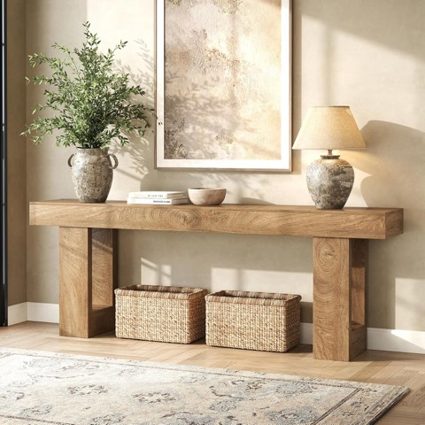
Epecoya Extra Long Entryway Console Table, 78.7 Inch, Natural Oak Brown
Shop on Amazon15. Layered Neutral Textiles That Feel Lived-In
Farmhouse style genuinely thrives on layers, one throw blanket looks fine on its own, but two or three layered together reads as intentional rather than sparse.
Sticking to neutral colors with real texture, rather than loud competing patterns, keeps a layered look calm instead of chaotic.
Mixing textures rather than colors is the real trick here, it keeps the whole arrangement feeling interesting without tipping into visual noise.
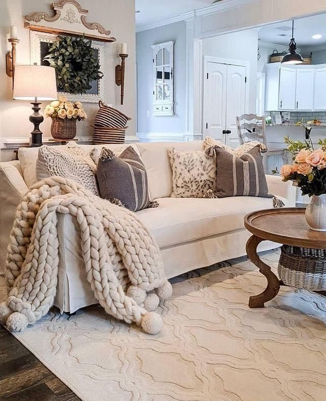
Final Thoughts
None of these fifteen ideas need to happen at once to make a real difference. Farmhouse decor rewards patience far more than most other styles, adding one piece, living with it, and building outward from there.
The homes that pull this style off best are rarely the ones that followed a strict formula, they're the ones that let real life and a few imperfect, meaningful pieces shape the space over time.
Give it a year, not a weekend, and the room will look like it actually belongs to someone.